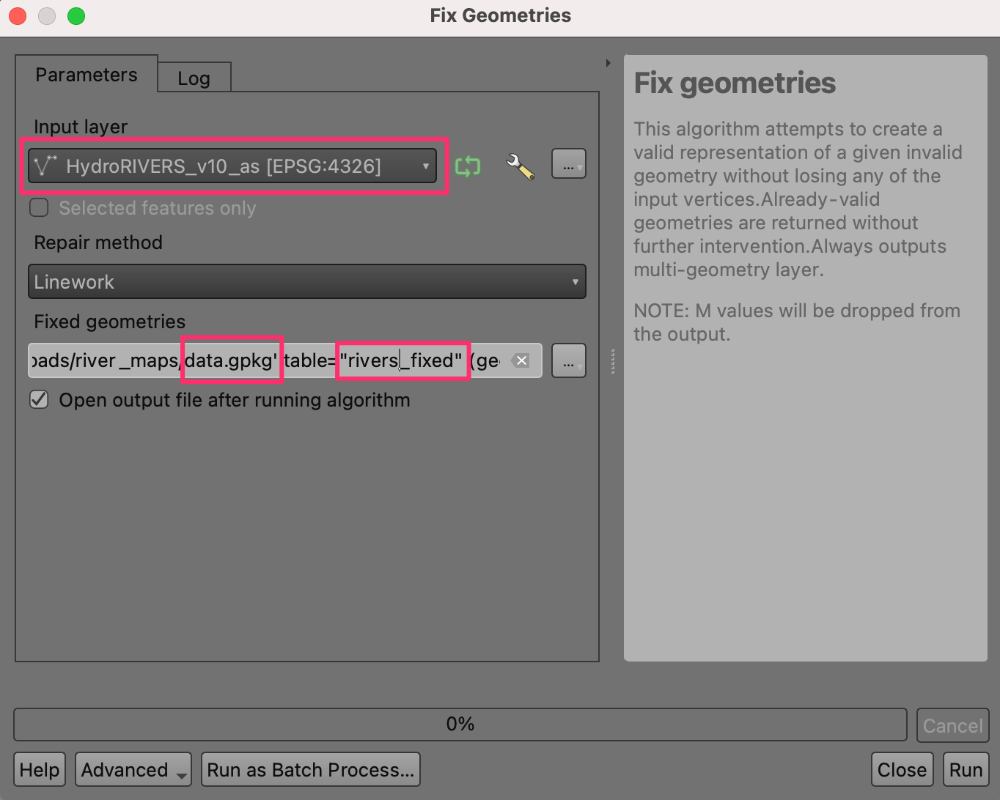
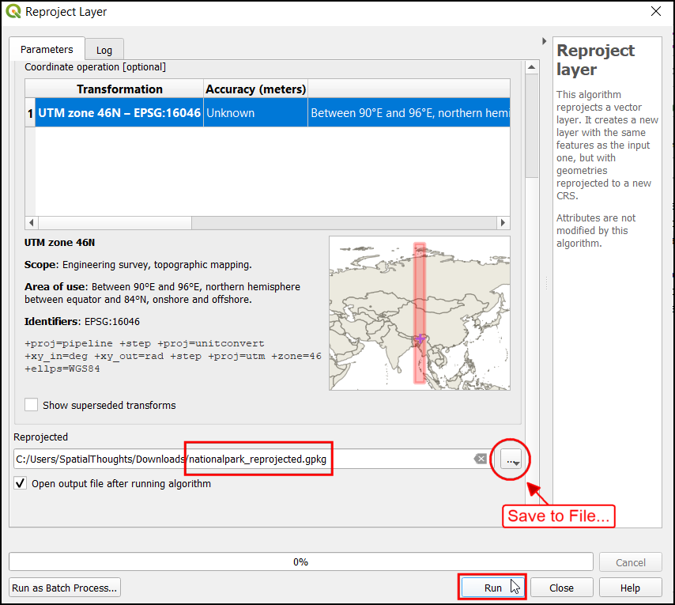
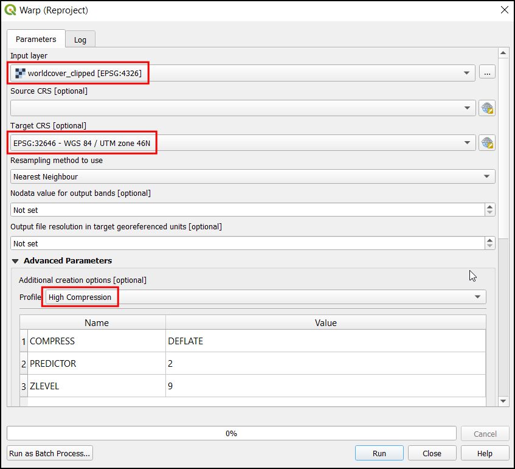
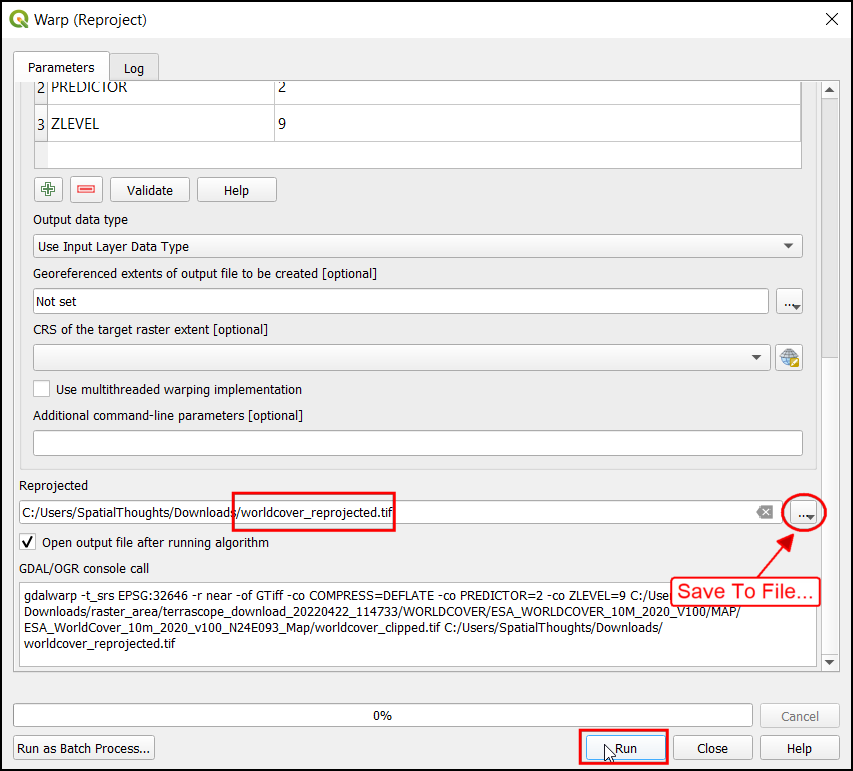

Calcular Longitudes y Estadísticas de Línea (QGIS3)¶
QGIS tiene funciones y algoritmos incorporados para calcular varias propiedades basadas en la geometría de la entidad - tales como longitud, área, perímetro, etc. Este tutorial mostrará como usar la herramienta Agregar atributos de geometría para agregar una columna con un valor que represente la longitud de cada objeto espacial.
Vista general de la tarea¶
Dada una capa polilínea de ferrocarriles en Norte América, determinaremos la longitud total de los ferrocarriles en los Estados Unidos.
Otras habilidades que aprenderá¶
Usar expresiones para filtrar entidades
Usar el panel Estadísticas para calcular y ver las estadísticas de columnas.
Obtener los datos¶
Natural Earth tiene un conjunto de datos de ferrocarriles de dominio público.
Download the North America supplement zip file from the portal.
Para su comodidad, puede descargar directamente una copia del conjunto de datos del enlace abajo:
ne_10m_railroads_north_america..zip
Fuente de Datos [NATURALEARTH]
Procedimiento¶
Ubique el archivo descargado
ne_10m_railroads_north_america.zipen el panel Explorador y expándalo. Arrastre el archivone_10m_railroads_north_america.shpa la pantalla.

Verá una nueva capa
ne_10m_railroads_north_americacargada en el panel Capas. Verá que la capa tiene líneas que representan ferrocarriles para toda Norte América. Ahora, calculemos las longitudes de cada entidad línea. Vaya a .

Busque y localice el algoritmo . Doble clic para ejecutarlo.

En el diálogo Agregar Atributos de Geometría, seleccione
ne_10m_railroads_north_americacomo la Capa de entrada. El Sistema de Referencia de Coordenada (SRC) de la capa de entrada es EPSG:4326 WGS84. Este es un SRC Geográfico con Latitud y Longitud como coordenadas, WGS84 como elipsoide y grados como unidades. Debido a que latitud y longitud no tiene una longitud estándar, no podemos medir distancias o áreas de forma precisa usando funciones de geometría planar. Afortunadamente, QGIS provee una mejor forma para calcular distancias usando geometría elipsoidal, que el es método más exacto para capas que se extienden grandes áreas como ésta. ElijaElipsoidalcomo la opción Calcular usando. Clic en Ejecutar. Una vez que termine el proceso, clic en Cerrar.

Nota
Si su capa de entrada está en una SRC Proyectada, puede elegir la opción SRC de Capa para el cálculo. Sistemas de coordenadas proyectadas Local o Regional están diseñadas para minimizar las distorsiones sobre la región de interés, por lo que son más exactas para tal cálculo.
Verá una nueva capa
Added geom infocargada en el panel Capas. Esta es una copia de la capa de entrada con una nueva columna agregada para distancia. Clic-derecho en la capaAdded geom infoy seleccione Abrir Tabla de Atributos.

Nota
La herramienta Agregar Atributo de Geometría agrega un conjunto diferente de atributos dependiendo si la capa de entrada es puntos, líneas o polígonos. Vea Documentación QGIS para más detalles.
En la Tabla de Atributos, verá una nueva columna llamada distance. Esta contiene la longitud de cada objeto espacial línea en metros. También note que el atributo sov_a3 que contiene el código de país para cada objeto espacial. Cierre la ventana Tabla de Atributos.

Ahora que tenemos longitudes de segmentos de línea individuales de ferrocarril, podemos sumarlos entre ellos para encontrar la longitud total de los ferrocarrilles. Pero como el enunciado del problema demanda necesitamos la longitud total de ferrocarril en los Estados Unidos, sólo debemos usar los segmentos contenidos dentro de EE.UU. Podemos usar el valor de código de país en la columna sov_a3 para filtrar la capa. Clic-derecho en la capa
Added geom infoy seleccione Filtro.

En el diálogo Constructor de Consulta, ingrese la siguiente expresión y clic Aceptar.
"sov_a3" = 'USA'
Verá un ícono Filtro aparecer junto a la capa
Added geom infoen el panel Capas indicando que un filtro es aplicado a la capa. Puede también confirmar visualmente que la capa contiene ahora segmentos de línea sólo para los Estados Unidos. Ahora estamos listos para calcular la suma. Clic en el botón Mostrar resumen estadístico en la Barra de Herramientas de Atributos.

Se abrirá un nuevo panel Estadísticas. Seleccione la capa
Added geom infoy la columnalength.

Verá varias estadísticas mostradas en el panel. La unidad de las estadísticas es la misma que las unidad de la columna
length- metros. Cambiemos el cálculo para usar en vez kilómetros. Clic en el ícono Expresión junto a al menú desplegable en el panel Estadísticas.

Ingrese la siguiente expresión en el Diálogo de Expresión que convierte la longitud a kilómetros.
length / 1000
El valor Suma mostrado es la longitud total de los ferrocarriles en EE.UU.

If you want to give feedback or share your experience with this tutorial, please comment below. (requires GitHub account)